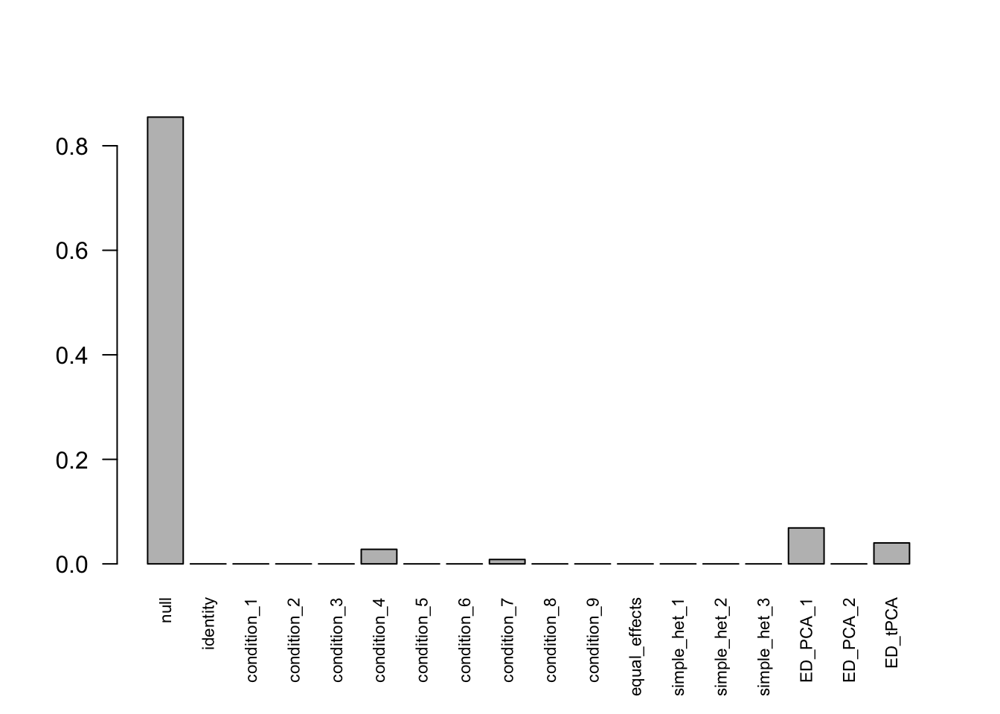
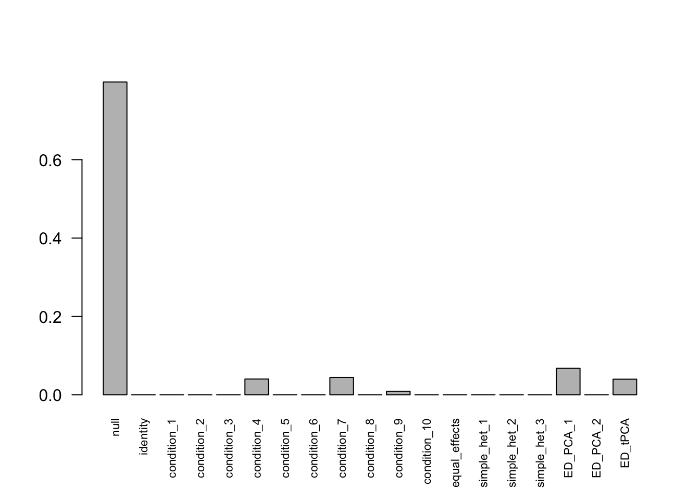
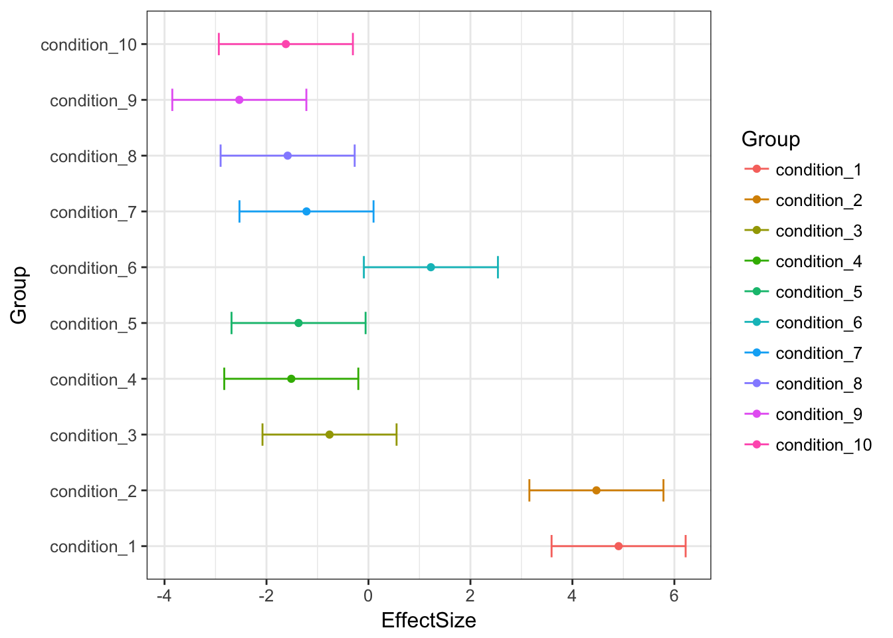
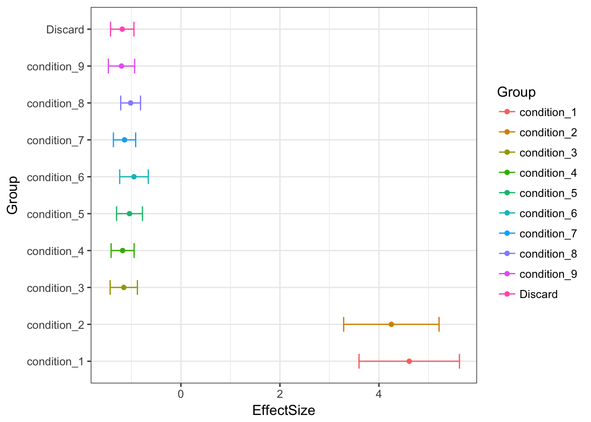

MeanSignal_CondnMean
Yuxin Zou
2018-5-16
## Loading required package: ashr## corrplot 0.84 loadedThe data contains 10 conditions with 10% non-null samples. For the non-null samples, it has equal effects in the first c conditions.
Let L be the contrast matrix that substract mean from each sample.
\[\hat{\delta}_{j}|\delta_{j} \sim N(\delta_{j}, \frac{1}{2}LL')\] 90% of the true deviations are 0. 10% of the deviation \(\delta_{j}\) has correlation that the first c conditions are negatively correlated with the rest conditions.
We set \(c = 2\).
Discard last col
Mash
## - Computing 10000 x 290 likelihood matrix.
## - Likelihood calculations took 1.49 seconds.
## - Fitting model with 290 mixture components.
## - Model fitting took 3.88 seconds.
## - Computing posterior matrices.
## - Computation allocated took 0.23 seconds.Using mashcommonbaseline, there are 288 discoveries. The covariance structure found here is: 
Recover the last column
mashcontrast.model.10.full = mashcontrast.model.10
mashcontrast.model.10.full$result = mash_compute_posterior_matrices(g = mashcontrast.model.10, data = mash_data_L, algorithm.version = 'R', recover=TRUE)There are 289 discoveries.
Bovy
## - Computing 10000 x 307 likelihood matrix.
## - Likelihood calculations took 1.26 seconds.
## - Fitting model with 307 mixture components.
## - Model fitting took 3.10 seconds.
## - Computing posterior matrices.
## - Computation allocated took 0.15 seconds.Using Bovy, there are 290 discoveries. The covariance structure found here is: 
The row means of the posterior mean matrix are not 0.
rowMeans(Bovy.model.10$result$PosteriorMean)[1:6]## sample_1 sample_2 sample_3 sample_4 sample_5
## -0.0041257029 0.0027218307 0.0008907543 0.0002479279 -0.0002353182
## sample_6
## -0.0029559848Original estimates 
MASHestimates
Bovyestimates

mean((Bovy.model.10$result$PosteriorMean - mashcontrast.model.10.full$result$PosteriorMean)^2)## [1] 0.0001147391Discard first col
Mash
## - Computing 10000 x 290 likelihood matrix.
## - Likelihood calculations took 1.32 seconds.
## - Fitting model with 290 mixture components.
## - Model fitting took 3.59 seconds.
## - Computing posterior matrices.
## - Computation allocated took 0.11 seconds.Using mashcommonbaseline, there are 283 discoveries. The covariance structure found here is: 
Recover the last column
mashcontrast.model.1.full = mashcontrast.model.1
mashcontrast.model.1.full$result = mash_compute_posterior_matrices(g = mashcontrast.model.1, data = mash_data_L, algorithm.version = 'R', recover=TRUE)There are 285 discoveries.
Bovy
## - Computing 10000 x 307 likelihood matrix.
## - Likelihood calculations took 1.30 seconds.
## - Fitting model with 307 mixture components.
## - Model fitting took 3.41 seconds.
## - Computing posterior matrices.
## - Computation allocated took 0.17 seconds.Using Bovy, there are 290 discoveries. The covariance structure found here is: 
The row means of the posterior mean matrix are not 0.
rowMeans(Bovy.model.1$result$PosteriorMean)[1:6]## sample_1 sample_2 sample_3 sample_4 sample_5
## -0.0041257029 0.0027218307 0.0008907543 0.0002479279 -0.0002353182
## sample_6
## -0.0029559848mean((Bovy.model.1$result$PosteriorMean - mashcontrast.model.1.full$result$PosteriorMean)^2)## [1] 0.05565642Compare models
The RRMSE plot:
delta.10 = data$C - rowMeans(data$C)
deltahat.10 = data$Chat - rowMeans(data$Chat)
delta.1 = delta.10[, c(2:10, 1)]
deltahat.1 = deltahat.10[, c(2:10, 1)]
barplot(c(sqrt(mean((delta.10 - mashcontrast.model.10.full$result$PosteriorMean)^2)/mean((delta.10 - deltahat.10)^2)),
sqrt(mean((delta.10 - Bovy.model.10$result$PosteriorMean)^2)/mean((delta.10 - deltahat.10)^2)),
sqrt(mean((delta.1 - mashcontrast.model.1.full$result$PosteriorMean)^2)/mean((delta.1 - deltahat.1)^2)),
sqrt(mean((delta.10 - Bovy.model.1$result$PosteriorMean)^2)/mean((delta.10 - deltahat.10)^2))), ylim=c(0,0.2), names.arg = c('mashcommon.10','Bovy.10', 'mashcommon.1','Bovy.1'), ylab='RRMSE')
We check the False Positive Rate and True Positive Rate. \[FPR = \frac{|N\cap S|}{|N|} \quad TPR = \frac{|CS\cap S|}{|T|} \]
sign.test.mash.10 = as.matrix(delta.10)*mashcontrast.model.10.full$result$PosteriorMean
sign.test.bovy.10 = as.matrix(delta.10)*Bovy.model.10$result$PosteriorMean
sign.test.mash.1 = as.matrix(delta.1)*mashcontrast.model.1.full$result$PosteriorMean
sign.test.bovy.1 = as.matrix(delta.10)*Bovy.model.1$result$PosteriorMean
thresh.seq = seq(0, 1, by=0.0005)[-1]
mashcontrast.10 = matrix(0,length(thresh.seq), 2)
bovy.10 = matrix(0,length(thresh.seq), 2)
colnames(mashcontrast.10) = colnames(bovy.10) = c('TPR', 'FPR')
mashcontrast.1 = matrix(0,length(thresh.seq), 2)
bovy.1 = matrix(0,length(thresh.seq), 2)
colnames(mashcontrast.1) = colnames(bovy.1) = c('TPR', 'FPR')
for(t in 1:length(thresh.seq)){
mashcontrast.10[t,] = c(sum(sign.test.mash.10>0 & mashcontrast.model.10.full$result$lfsr <= thresh.seq[t])/sum(delta.10!=0), sum(delta.10==0 & mashcontrast.model.10.full$result$lfsr <=thresh.seq[t])/sum(delta.10==0))
bovy.10[t,] = c(sum(sign.test.bovy.10>0& Bovy.model.10$result$lfsr <=thresh.seq[t])/sum(delta.10!=0), sum(delta.10==0& Bovy.model.10$result$lfsr <=thresh.seq[t])/sum(delta.10==0))
mashcontrast.1[t,] = c(sum(sign.test.mash.1>0 & mashcontrast.model.1.full$result$lfsr <= thresh.seq[t])/sum(delta.1!=0), sum(delta.1==0 & mashcontrast.model.1.full$result$lfsr <=thresh.seq[t])/sum(delta.1==0))
bovy.1[t,] = c(sum(sign.test.bovy.1>0& Bovy.model.1$result$lfsr <=thresh.seq[t])/sum(delta.10!=0), sum(delta.10==0& Bovy.model.1$result$lfsr <=thresh.seq[t])/sum(delta.10==0))
}
This R Markdown site was created with workflowr